In the left-hand panel marked "Object Browser" in PG Admin, right-click
on the "Databases" item. Then click "New database..."
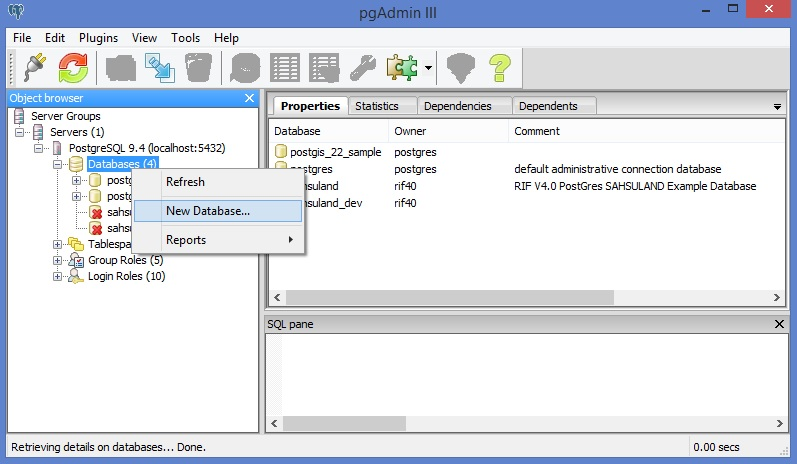
You should now see the following dialog. Choose some meaningful name for
the test database you're about to create (eg: algae_15012016).
Click the "OK" button. You should now see an entry for your new database
in the Object Browser.
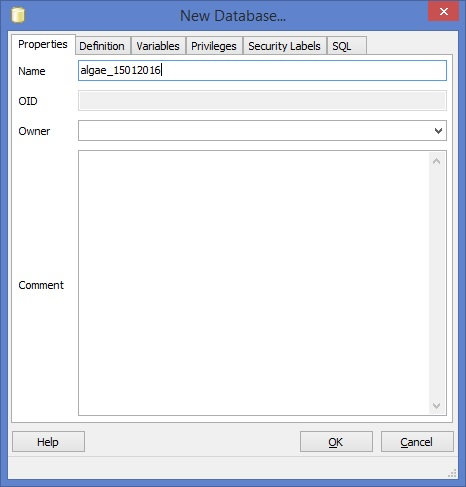
Double click on the Object Browser entry for your database (eg: the part of the
tree that would say algae_15012016). You should see the following
items under the heading for your new database.
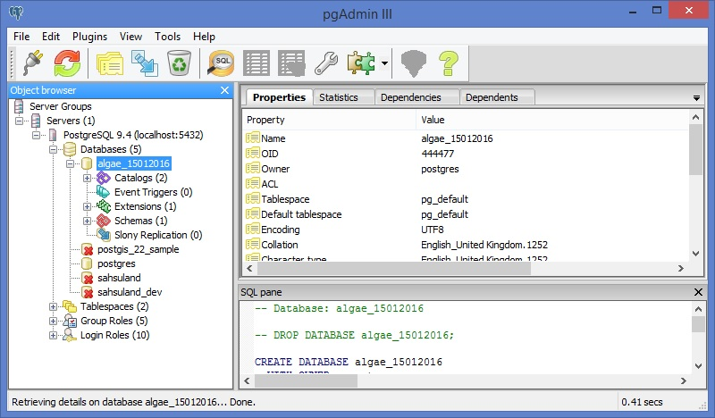
Click on the Tools menu and choose "Query Tool". The following dialog appears:
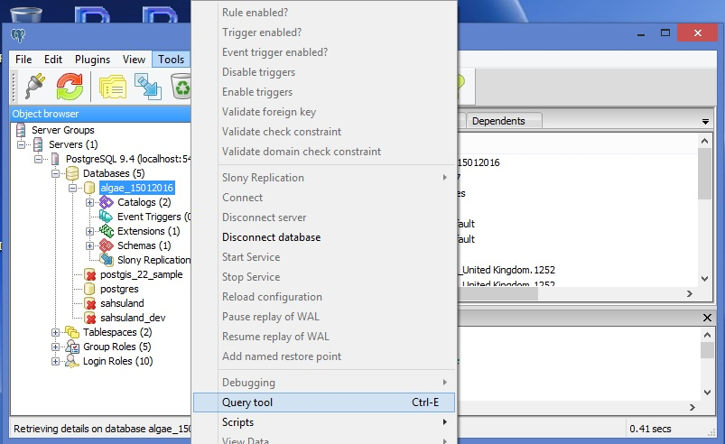
Now we're going to load all the code you need to run the ALGAE test cases.
In your download, find and open the text file:
C:\algae_protocol\Load_All_ALGAE_Code.sql
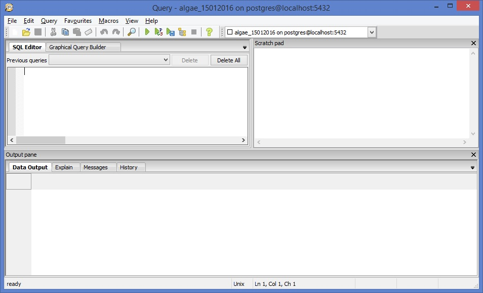
Using your favourite text editor (or use Eclipse), select all of the text in the
file and copy it into the Query tool window.
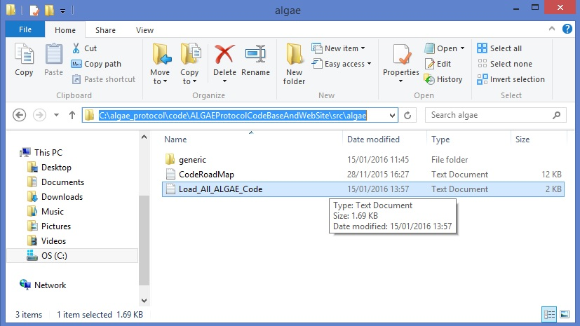
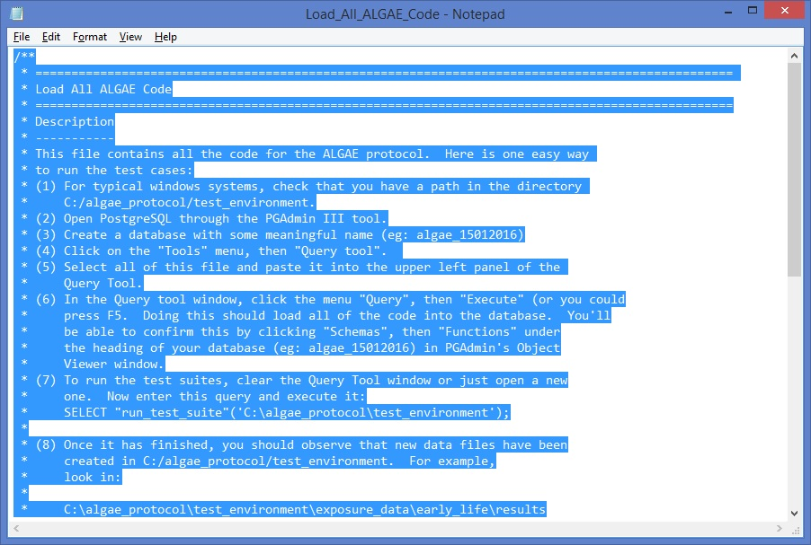
Within the Query tool window, you should now see the top lines of the
Load_All_ALGAE_Code.txt file.
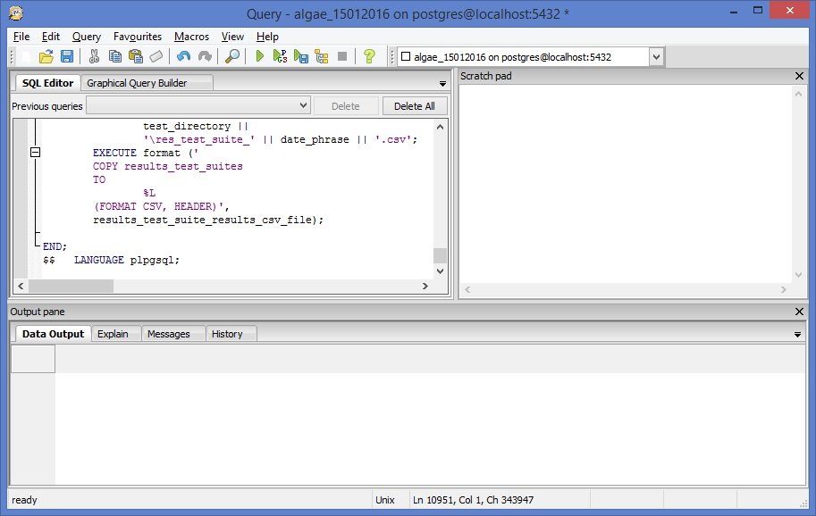
Click on the "Query" menu, then click "Execute".
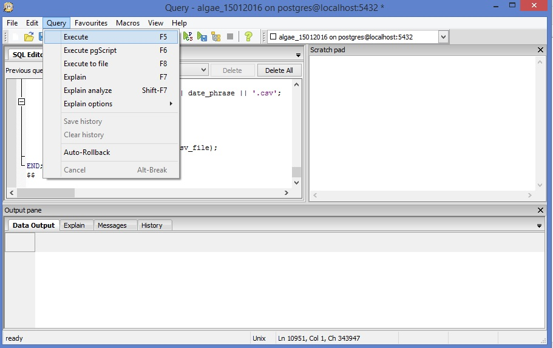
Very quickly, you should see the message "Query returned successfully with no result in xxx ms".
This just tells you that PostgreSQL loaded all the code correctly and didn't encounter any
problems.
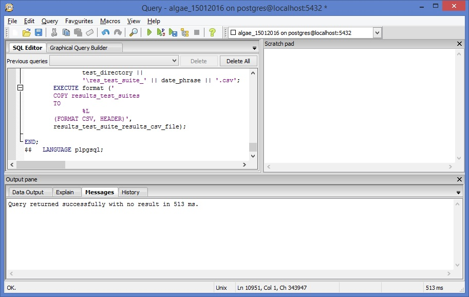
You should now be able to see the result of loading the code. In
the Objecct browser panel, click first on your database (eg: algae_15102016).
Then click on "Schemas" and finally click on "Functions". You should dozens of
database functions listed. These are responsible for processing your cohort data.
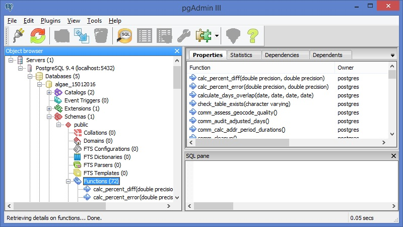
We now want to run the test suites to make sure that you've installed ALGAE
correctly and that the program works. Paste the following line of code into
the Query tool window and press Execute (ie press F5 button):
Verify that the program ran correctly. When the program finishes running, you should
see a row marked "1" in the Data Output panel at the bottom of the Query Tool screen.
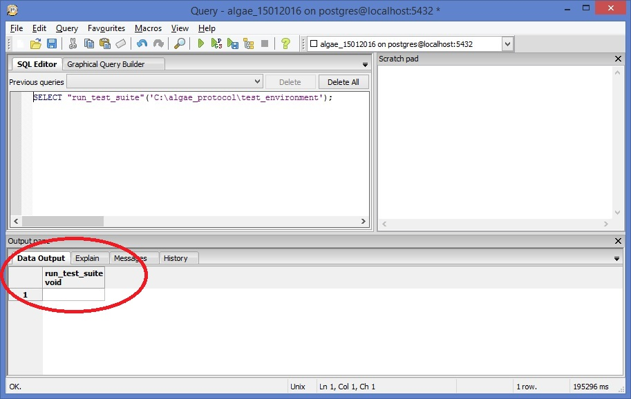
If you want to see more information telling you about how it ran, click on the
"Messages" panel that appear along with the "Data Output" tab.
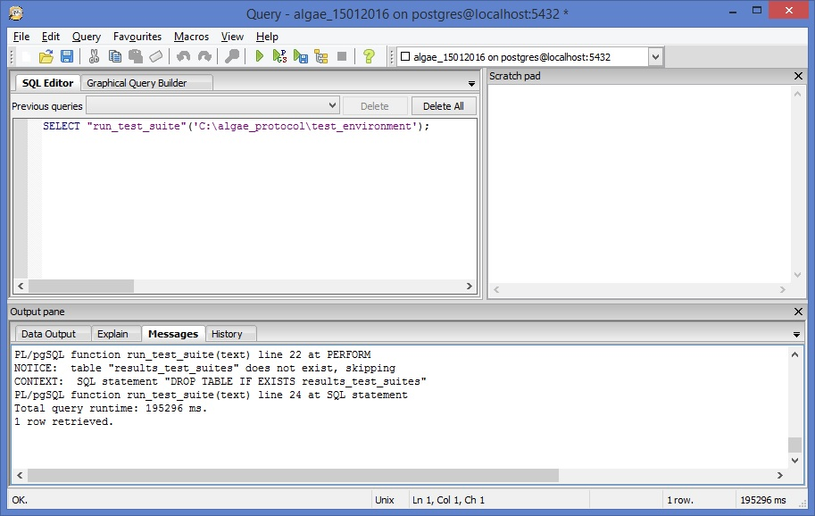
If you finish these steps, it means you've successfully installed ALGAE and
verified that it can run on the test data sets that come with the download
bundle.